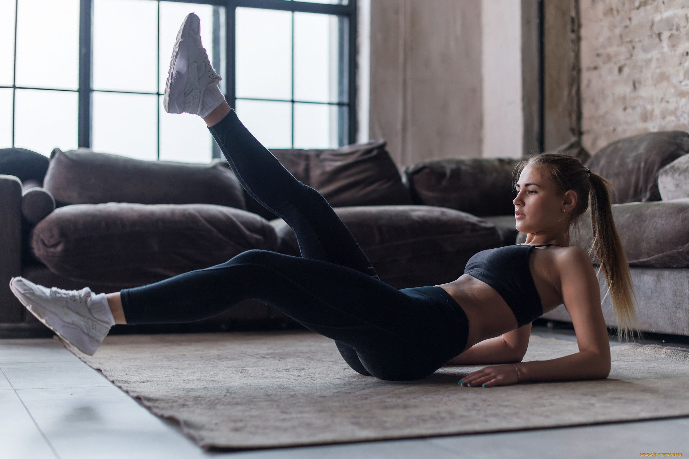

ПИТАНИЕ
Несколько принципов, которые помогут изменить ваш рацион в лучшую сторону:
- пить достаточное количество (30 мл на 1 кг тела) чистой воды;
- кушать тогда, когда начал испытывать голод – это очень важно, питаться именно по голоду, желательно без частых перекусов, для профилактики инсулинорезистентности;
- хорошо пережевывать каждый кусочек, и даже более того, есть осознанно, жевать отложив вилку;
- кушать в спокойном состоянии;
- концентрироваться во время еды на процессе;
- кушать сидя, желательно поставив обе ноги на пол;
- активно двигаться на протяжении дня;
- кушать свежеприготовленную пищу;
- употреблять больше клетчатки – фрукты и овощи в свежем виде;
- хотя бы 2 раза в неделю употреблять рыбу для получения Омега 3 жирных кислот из пищи.
ВОССТАНОВЛЕНИЕ
Несколько принципов, которые помогут восстановиться после тренировки:
- Растяжка. Чем гибче тело, тем меньше болят мышцы. Даже небольшое вытяжение тех групп мышц, которые работали во время тренировки, способствует быстрому восстановлению.
- Контрастный душ. Чем больше разница температур, тем лучше. Такой душ вообще как имунностимулятор — хорошо практиковать его на постоянной основе. Сосуды расширяются и сужаются, что ускоряет вывод молочной кислоты.
- Аминокислоты. Чтобы восстановить мышцы, организм затрачивает аминокислоты в больших объёмах. И зачастую уже для питания мышц и клеток не хватает. Их необходимо добирать извне, для этого можно выбрать натуральные источники белка, которые легко усваиваются
- Массаж. Если цель — уменьшение мышечной боли, то массаж необходим сразу же после тренировки. Это снизит тонус мышц и то, что спазмировано расслабится, напитается кислородом и улучшит приток крови к необходимым участкам тела.
- Сон. Основные процессы восстановления организма начинаются именно во сне. Выделяется гормон мелатонин, и центральная нервная система переходит в режим обновления.
